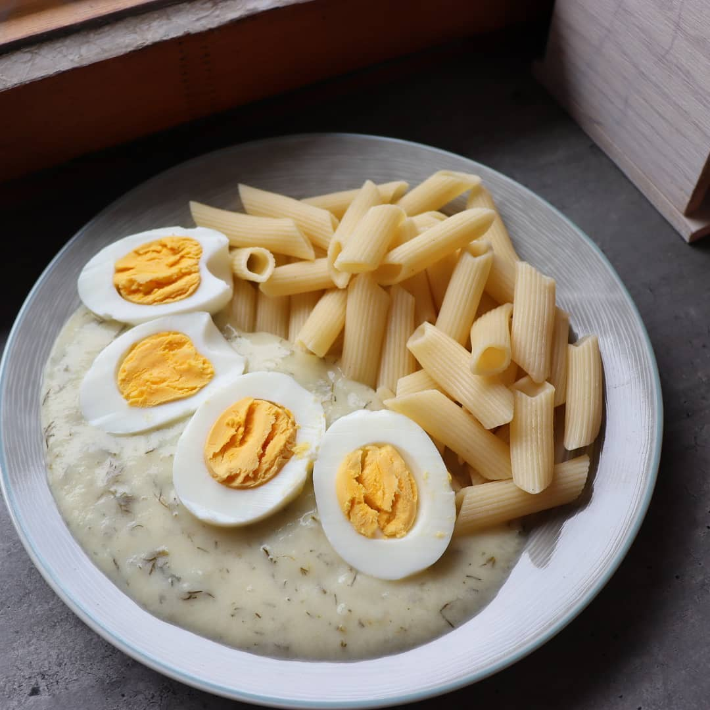

Kôprová omáčka podľa @janatova.fitnostress — Normy Jedál
Koprová omáčka ❤️
Koprovka je jedním z jídel, která buď milujete nebo nemůžete ani cítit 🤔Na jakou stranu se řadíte vy? Pokud na tu první, mám tu pro vás jednoduchý recept na omáčku se spoustou zeleniny a bez zahušťování moukou 😉
- jedna oloupaná brambora
- cibule na drobno
- dvě velké petržele na kostičky
- zakysaná smetana
- kopr
- sůl
- vajíčka
- příloha dle vašeho výběru
V hrnci osmahneme cibulku, přidáme nakrájenou petržel, bramboru na kostičky a zalijeme vodou. Vaříme dokud není zelenina měkká. Pak rozmixujeme tyčovým mixérem, vznikne nám hustá jemná omáčka. Přidáme zakysanou smetanu, kopr, osolíme a ještě chvíli povaříme. Nakonec si omáčku dolaďte dle svých představ 😉 Za mě je už takhle perfektní, nakyslá po smetaně, nasládlá po zelenině.
#koprovka #koprovaomacka #fitrecepty #zdravastrava #zdraveobedy #varimezdrave #recepty #omacka #recept #jimezdrave #budfit #varimedoma #varimeprodeti #hubni #hubnemedoplavek #fitnostress